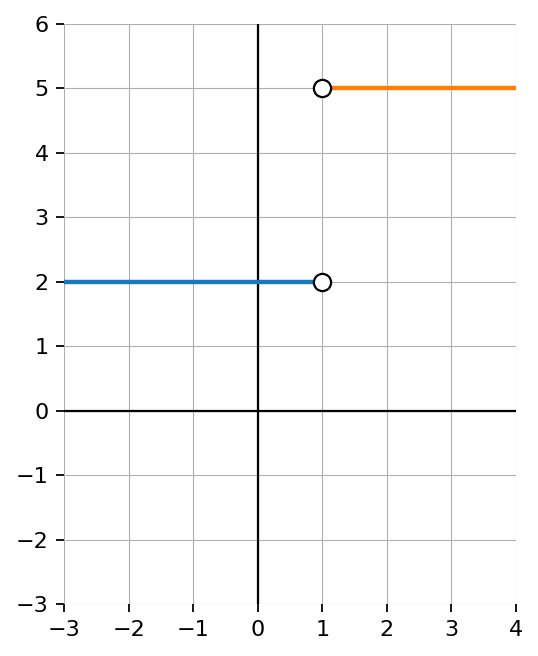
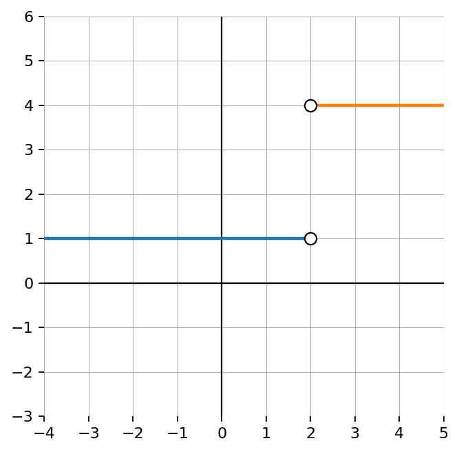

Practice Set 2.5.3
Fill in the blanks.
- To find an inverse algebraically, switch ____________________ and ____________________.
- The graph of an inverse reflects across the line ____________________.
- If \(f(a)=b\), then \(f^{-1}(b)=\) ____________________.
Let \(f(x)=x^2+4\) with domain \(x\ge0\).
- Find \(f^{-1}(x)\).
- State the domain and range of \(f^{-1}\).
- Explain why the domain restriction matters.
Explain why \(f(x)=x^2\) does not have an inverse function unless its domain is restricted.
Design a graph that has an inverse relation but not an inverse function.
- Sketch or describe the graph.
- Explain why the inverse relation exists.
- Explain why the inverse is not a function.

Evaluate each expression when \(x=4\) and \(y=-1\).
\(x+y\)
\(xy\)
\(x^2-y\)
\(2x-3y\)
If \(h(x)=3x^2-2x+1\), evaluate each.
\(h(1)\)
\(h(-1)\)
\(h(0)\)
\(h(2)\)
Which expression is equivalent to \((x+4)^2\)?
\(x^2+16\)
\(x^2+8x+16\)
\(x^2+4x+16\)
\(2x+8\)
State whether each expression is equivalent to \(6x+12\).
\(6(x+2)\)
\(3(2x+4)\)
\(6x+2\)
\(2(3x+6)\)
\(x+5x+12\)
If \(f(x)=2x^2-x+3\), write and simplify each expression.
\(f(x+1)\)
\(f(x-2)\)
\(f(2x)\)
Solve each equation by recognizing structure.
\(2x+7=19\)
\((x-4)^2=25\)
\(\sqrt{x+3}=6\)
\(\frac{x+5}{3}=8\)
A student claims:
\[\frac{x^2-16}{x-4}=x+4\]
for all values of \(x\).
Explain what is correct about the simplification.
Explain what value must be excluded.
Explain why the original and simplified expressions are not exactly the same function.
Two expressions are shown:
\[A(x)=\frac{x^2-25}{x-5}\]
\[B(x)=x+5\]
Simplify \(A(x)\).
State any excluded value for \(A(x)\).
Compare \(A(x)\) and \(B(x)\) as expressions and as functions.
Evaluate both at \(x=7\).
Explain why restrictions matter when connecting algebra and graphs.
Use the graph to determine \(\lim_{x\to 1^-} f(x)\) and \(\lim_{x\to 1^+} f(x)\).

Use the graph to determine whether the limit exists at \(x=2\). Justify using left-hand and right-hand limits.

Use the graph to classify each special behavior shown as a jump, hole, point value difference, or vertical asymptote. Then state which limits exist.

Create a graph where \(\lim_{x\to 2} f(x)=5\) but \(f(2)=-1\). Include a brief explanation of how your graph satisfies both conditions.
Check Your Understanding 2.5
Evaluate each expression when \(x=3\).
\(2x+5\)
\(x^2-4\)
\(3(x-1)\)
\(\frac{x+9}{2}\)
If \(f(x)=2x+7\), evaluate each.
\(f(0)\)
\(f(3)\)
\(f(-4)\)
\(f(10)\)
Fill in the blanks.
In function notation, \(f(3)\) means the ______ value when the input is ______.
The expression \(f(x+2)\) means replace every \(x\) in the formula with ______.
Equivalent expressions have the same value for every allowed ______.
A student says:
“\(f(x)\) means \(f\) times \(x\).”
What is wrong with the statement? Explain what \(f(x)\) means.
If \(g(x)=\frac{x+6}{x-2}\), evaluate each.
\(g(3)\)
\(g(8)\)
\(g(0)\)
Explain why \(g(2)\) is undefined.
For the table below, identify the input and output values.
| \(x\) | \(-2\) | \(-1\) | \(0\) | \(1\) | \(2\) |
|---|---|---|---|---|---|
| \(f(x)\) | \(7\) | \(4\) | \(1\) | \(-2\) | \(-5\) |
Find \(f(0)\).
Find \(f(2)\).
For what input is \(f(x)=4\)?
Is the relationship linear? Explain.
A student evaluates \(f(x)=x^2+4x\) at \(x=-3\) and writes:
\[f(-3)=-3^2+4(-3)=-9-12=-21.\]
Identify the error and evaluate correctly.
A function is represented by the rule:
\[f(x)=3(x-2)^2+1.\]
Evaluate \(f(0)\), \(f(2)\), and \(f(4)\).
Explain what symmetry you notice in the outputs.
Create a table with five input-output pairs centered around \(x=2\).
Describe the graph using words.
Explain how this function connects algebraic structure, tables, and graphs.